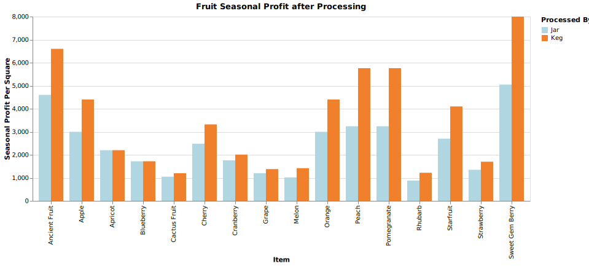
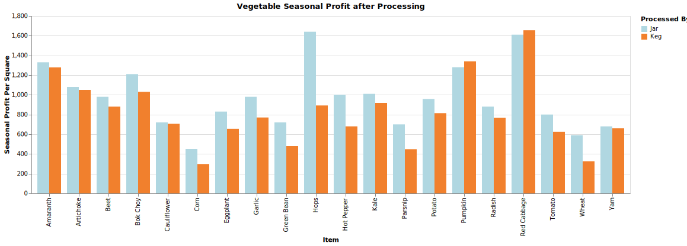

Module 2: Data Three Ways
Stardew Valley Crops: Which is Most Profitable?
Stardew Valley is a popular farming simulator game that can be played on PC or Nintendo Switch.
The video game takes the player on a journey as they move to their grandfather's old farm to start a new life away
from the city. The player can do a multitude of activities, including farming, fishing, foraging, mining, and
befriending the people of Pelican Town. The main mechanic of the game, however, is running the farm and making a profit.
Many aspects of the game are unlocked by farming and making enough revenue to complete quests. However, the complexity of
farming can make it a bit difficult for beginners to know where to start. Crops in the game grow in different seasons,
for different lengths of times, and in various quantities. Some crops also regrow without having to buy new seeds to plant.
With the vast size and complexity of the game in these farming mechanics alone, it can be difficult to know what the best
way to earn a profit. By analyzing crop price data from Stardew Valley, the most profitable crop in each season can be
determined to help individuals be the most successful in their farming endeavors.
Source
As Stardew Valley is a publicly-available game, data about the game and items within it is easily accessible.
Several sources online list stats on in-game crops, including the purchase costs, sell prices, growth times, and season.
I was able to find this dataset containing various profit analyses on the crops available in Stardew Valley via the
Stardew Valley Wiki forum, cited below.
Stardew Valley Price Sheet
Stardew Valley Wiki Page
Crop Profit vs. Growth Time (D3)
First, we will analyze which crop is most profitable directly after harvesting (raw crops) in comparison to growth time. In early game, machines
such as kegs and preserve jars, which process crops into a more profitable form, are not yet accessbile. Therefore, it can be useful
to see the raw profit of crops for those who are unable to reap these farming bonuses at their point in the game. To analyze the base level profit,
we will compare the earned profits from selling single, unprocessed crops. Factoring in growth time, we can see which crops yield the biggest profit
in the shortest amount of time.
A bubble chart analyzing raw profit vs growth time can be created in D3. Raw profit is plotted on the y-axis, and is also used to scale bubble radius. each
bubble is colored by season of crop growth. Only crops that grow within the first half of a season are analyzed, as crops that take longer than that aren't
available in the early stages of the game.
From this chart, we can see that Crystal Fruit yields the highest profit in the shortes amount of time, yielding 150g in no growth time. This crop can be found
in Winter. Starfruit is the highest yielding crop at 350g, taking 13 days to grow. This crop grows during Summer. In looking at this visualization, the most optimal
crop to earn profit the quickest can be quickly determined, which can be useful when just starting out the game.
Most Profitable Crop after Full Season of Harvest (Tableau)
Determining the most profitable crop after one harvest leaves out an important factor of Stardew Valley farming: crops can be harvested more than once in any given season.
Certain crops can be regrown without buying more seeds, or yield more than one crop each harvest. These are not factors that were considered in the previous visualization,
but impact the overall profitability of crops. To see the profit that will be earned throughout the season, we will use the Seasonal Profit Per Square metric, which
describes how much one single crop will yield in profit over the 28-day season. This accounts for the fact that some items can produce multiple crops from one square,
or can regrow after harvesting.
From this visualization created with Tableau, we can see that the following crops are most profitable after a full season of growing:
- Spring: Strawberry
- Summer: Starfruit
- Summer or Fall: Wheat
- Fall: Sweet Gem Berry
- Multi-Season: Ancient Fruit
- Indoors: Cactus Fruit
- Winter: Crystal Fruit
Furthermore, the most profitable crop overall considering just base selling price is Ancient Fruit, which is a multi-season fruit.
Most Profitable Crop after Processing (D3)
Lastly, we will consider which processing method is best for each crop. As mentioned before, certain crops can be processed from their
raw form into artisan goods by using **preserve jars** or **kegs**. This can increase the profit that a given crop brings a player in Stardew Valley.
Building these machines, however, take a lot of resources, so they aren't typically used until more progress has been made in the game.
Here, we will compare crops' profits before and after processing via preserve jar and keg to see which increases the profit most.


From these visualizations, one observation is that fruits are more profitable overall than vegetables. Sweet Gem Berry is the most profitable
processed crop overall, which differs from raw profit (Ancient Fruit). Additionally, crops that return a negative profit when unprocessed are fairly profitable
once processed by keg. This includes apples, apricots, cherries, oranges, peaches, and pomegranates. It is also interesting that vegetables become more profitable
with jars over kegs, whereas fruits are the opposite.
Conclusion
Overall, these observations show how to best maximize each crop in the game, as well as which crops can offer the largest profit in total. These visualizations help to
highlight the best crop for each season, as well as the best ways to profit off of each crop by using kegs or preserve jars.